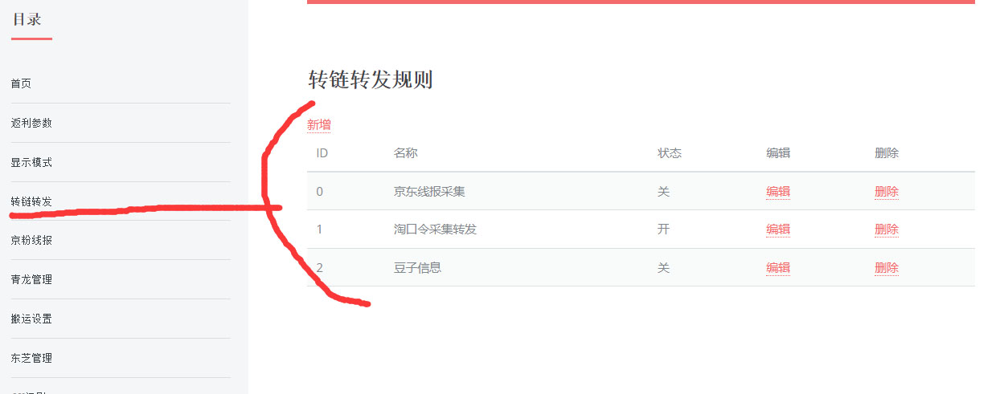

想要设置监听转发，增加相应的规则即可

增加规则
京东
set fanli transfer true/false 说明：开启关闭监听转链转发
set fanli transferJdFreq 10 说明：转发频率不低于10分钟1次
set fanli transferFrom 418353744,263723430,22853622845 监听什么群,qq群，微信群，tg等均可
set fanli transferListen 282617666,hdbjlizhe 监听上面设置的群中的某个人
set fanli transferTo qqgroup:418353744,qqgroup:263723430,wxgroup:22853622845 转发给谁转发给谁
淘宝
set fanli transferTb true/false 说明：开启关闭监听转链转发
set fanli transferTbFreq 10 说明：转发频率不低于10分钟1次
set fanli transferTbFrom 418353744,263723430,22853622845 监听什么群，qq群，微信群，tg等均可
set fanli transferTbListen 282617666,hdbjlizhe 监听上面设置的群中的某个人
set fanli transferTbTo qqgroup:418353744,qqgroup:263723430,wxgroup:22853622845 转发给谁